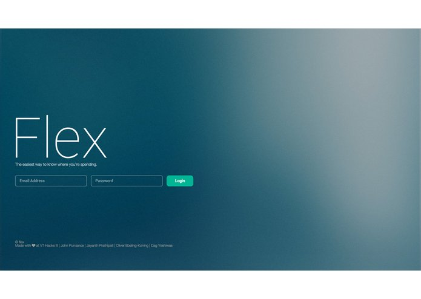

Flex
VTHacks III · 🏆 Winner: Microsoft - $100 Visa Gift Card
A budgeting app built at VT Hacks III. It maps your recent purchases so you can see where you spend the most, and uses natural language processing and data visualizations to sort spending into nine core categories, with location-based spending warnings. Team: Dag Yeshiwas, Jayanth Prathipati, John Purviance, Oliver Ebeling-Koning.